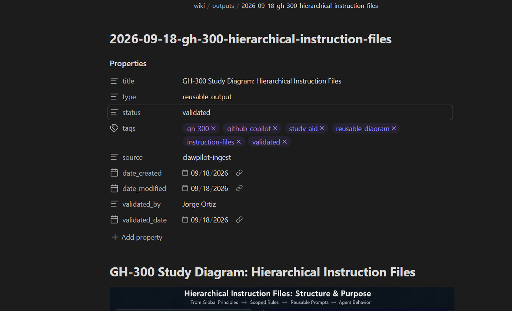
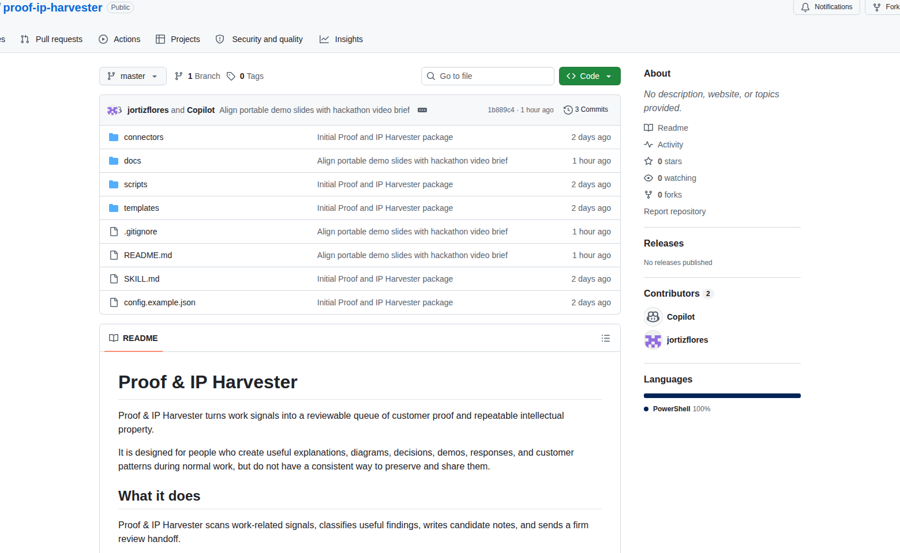

Harvest the work you already did.
Customer Proof + Repeatable IPWhat changed for the customer?
An outcome. A decision. A supported impact statement.
What can someone else use?
An explanation. A diagram. A playbook. A starting point.
A study diagram becomes a review packet with an audience, a sharing plan, and suggested wording.
The walkthrough uses a real, user-supplied GH-300 diagram. This packet is an illustrative reconstruction.
Reusable value: a starting point for a study group.
Source: attach the original diagram and current references.
Target: wiki/outputs, after review.
"I'm preparing a study aid. Could you review the explanation before we share it with the group?"
Review question: What needs correcting before reuse?
The owner reviewed this artifact and approved it for reuse.
Approval, technical accuracy, and permission to publish remain separate checks.
Real validated output · sidebar removed
Where to look. What to review.
What to reply. Why it matters.
The handoff comes before approval.
The host provides delivery and permissions.
Check technical claims and source permissions before promoting to wiki/outputs.
Forecast: a useful starting point after review.
Weekly take (illustrative): prioritize turning existing explanations into peer-reviewed aids.
Start with the README.
Review the skill.
Adapt the templates.
Your assistant supplies M365 / WorkIQ access, storage, scheduling, and notification.
github.com/ortizjorge639/
proof-ip-harvester

Start the next response from something useful.
Spend less time reconstructing previous work.
Turn approved field examples into coaching
and reusable material for the team.
Standalone skill + templates + setup helpers. Host connectors required.
Intended benefits; time savings and cross-harness operation are not yet measured.